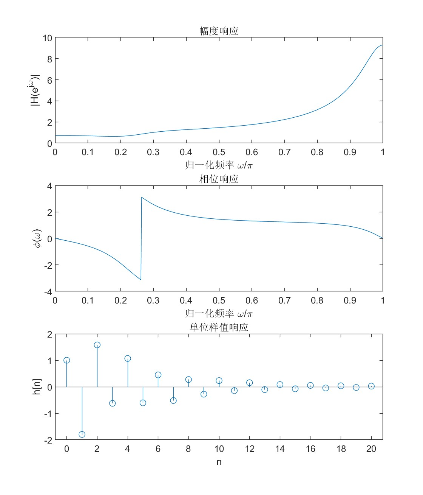

MATLAB 常用函数总结
| 功能/响应类型 | 连续系统 (Continuous) | 离散系统 (Discrete) |
|---|---|---|
| 定义系统 | tf(b,a) 或 zpk(z,p,k) |
tf(b,a,-1) 或 zp2tf(z,p,k) |
| 冲激响应 | impulse(sys) |
impz(b,a,N) |
| 阶跃响应 | step(sys) |
stepz(b,a,N) |
| 任意输入响应 | lsim(sys,x,t) |
filter(b,a,x) 或 conv(x,h) |
| 频率响应 (幅频/相频) | bode(sys) 或 freqresp(sys) |
freqz(b,a,N) |
绘图相关
连续图（幅频相频/连续时域）用plot(x,y)画，离散响应用stem(x,y)画。使用xlabel('xxx'),ylabel('xxx'),title('xxx')画xy坐标轴和标题，支持latex语法。
子图定义：使用subplot(m,n,p)后，plot就能绘制\(m\\times n\)图的第\(p\)个子图。如2006年题依次使用subplot(3,1,1), subplot(3,1,2), subplot(3,1,3)绘制幅频、相频、样值响应：

离散系统相关
得到系统函数
已知系统零点\({z_1,,z_2,,\\cdots}\)极点\({p_1,,p_2,,\\cdots}\)，即系统函数
\[
H(z)=k\\cdot \\frac{(z-z_1)\\cdot(z-z_2)\\cdots}{(z-p_1)\\cdot(z-p_2)\\cdots}
\]
使用zp2tf
即可得到系统函数\(H(z)=B(z)/A(z)\)。如果已知条件是差分方程
\[
a_0y\[n\]+a_1y\[n-1\]+\\cdots+a_py\[n-p\]=b_0x\[n\]+b_1x\[n-1\]+\\cdots+b_qx\[n-q\]
\]
则直接令
即可。
画频率响应
频率响应即
\[
H(\\exp(j\\omega))=H(z){|} _{z=\\exp(j\\omega)}
\]
使用函数freqz得到频率响应（复数形式）
然后使用abs和angle得到模和相位, 使用plot画图。
subplot(2,1,1)
plot(w/pi, abs(H));
xlabel('归一化频率 \omega/\pi');
ylabel('|H(e^{j\omega})|');
title('幅度响应');
subplot(2,1,2);
plot(w/pi, angle(H));
xlabel('归一化频率 \omega/\pi');
ylabel('\phi(\omega)');
title('相位响应')
画时域响应
初值
得到初值zi,然后filter(b,a,x,zi)即可。
样值和阶跃
分别使用impz和stepz绘制。如
一般信号的响应
对于已知的\(x\[n\]\), 只需要令
\[
y\[n\]=x\[n\]\*h\[n\]
\]
即可得到其响应。matlab种使用函数conv(x,h)即可，其中h由impz得到。同样也可以利用filter函数得到
其中系数矩阵[b,a]=zp2tf(z,p,k);对应
\[
H(z)=\\frac{B(z)}{A(z)}
\]
\(x\[n\]\)可以通过对(0:N)作逐元素运算得到。这里(0:N)表示矩阵\(\[,0,,1,,2,,\\cdots,,N,\]\)